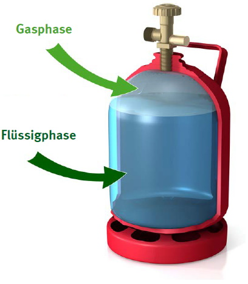
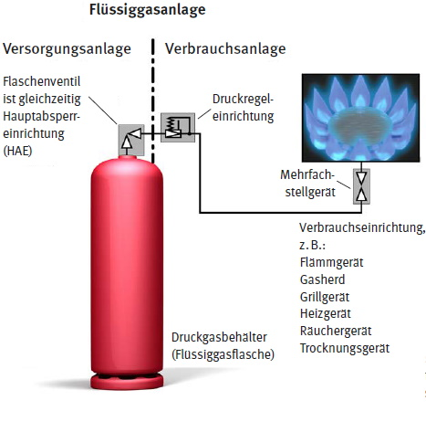
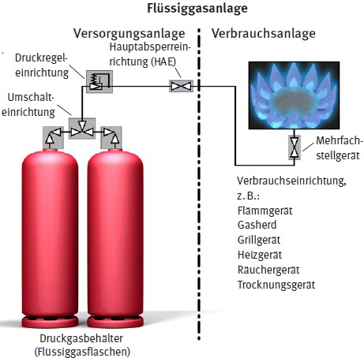
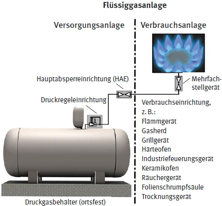
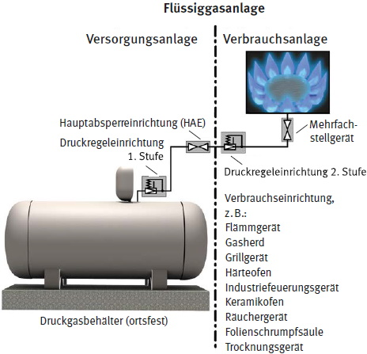
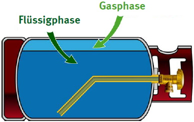
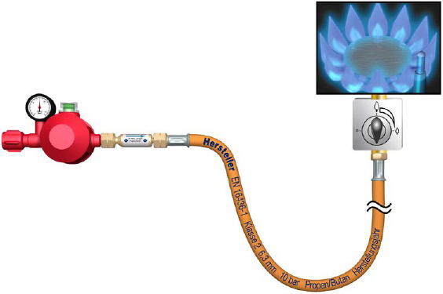

| A |
Anschlusswert
Anschlusswert ist der Gasverbrauch in kg/h oder g/h einer Verbrauchseinrichtung bei Nennwärmebelastung; er wird auf den unteren Heizwert (Hi) bezogen.
Aufstellung von Flüssiggasflaschen
Zu der Aufstellung zählen die zum Entleeren angeschlossenen und die bereitgehaltenen Flüssiggasflaschen.
Ausgangsdruck der Druckregeleinrichtung
Der Ausgangsdruck der Druckregeleinrichtung ist der Wert des geregelten Druckes. Der Ausgangsdruck wird in der Regel als Überdruck angegeben.
Ausrüstungsteile
Ausrüstungsteile sind sicherheitstechnisch erforderliche und dem Betrieb der Verbrauchsanlagen dienende Einrichtungen, Armaturen und Regeleinrichtungen.
Zu den Ausrüstungsteilen gehören z. B.
| B |
Batterieanlage
Die Batterieanlage ist ein Zusammenschluss von Flüssiggasflaschen (Flaschenbündel) zum Zweck der gemeinsamen Entleerung.
Bereithalten von Flüssiggasflaschen
Als Bereithalten (entsprechend TRBS 3145/TRGS 745) gilt, wenn gefüllte Flüssiggasflaschen an den zum Entleeren vorgesehenen Stellen als Reservebehälter an Entnahmeeinrichtungen angeschlossen sind (das Ventil der Flüssiggasflasche ist noch geschlossen) oder zum baldigen Anschluss aufgestellt sind, soweit dies für den Fortgang der Arbeiten erforderlich ist.
Als Bereithalten gilt auch, wenn gefüllte Flüssiggasflaschen in der jeweils erforderlichen Anzahl und Größe
Betriebsdruck
Der Betriebsdruck (engl. operating pressure (OP)) ist der in einem Anlagenteil bei ordnungsgemäßer Betriebsweise jeweils auftretende geregelte Gasdruck (oftmals 50 mbar bei einer Flüssiggasverbrauchsanlage). Der Betriebsdruck wird in der Regel als Überdruck angegeben.
Brenngastank
Der Brenngastank ist ein fest mit dem Fahrzeug verbundener Druckgasbehälter, in dem Flüssiggas zu Brennzwecken in Fahrzeugen bereitgehalten wird (nicht zum Antrieb für Fahrzeuge mit Flüssiggas-Verbrennungsmotor). Das Flüssiggas wird aus der Gasphase entnommen.
| D |
Druckgasbehälter
Druckgasbehälter sind Druckbehälter für Gase, unabhängig vom Druck. Zum Druckgasbehälter gehören seine Ausrüstungsteile, die dessen Sicherheit beeinflussen können. Es werden ortsbewegliche und ortsfeste Druckgasbehälter unterschieden (siehe TRGS 407 "Tätigkeiten mit Gasen – Gefährdungsbeurteilung").
Druckregeleinrichtung
Die Druckregeleinrichtung ist ein Druckregelgerät oder eine automatische Umschalteinrichtung oder eine Kombination aus beiden.
Druckregler sind Druckregelgeräte, die als Einrichtung den Ausgangsdruck unabhängig von Schwankungen des Eingangsdruckes und/oder Änderungen von Durchfluss und Temperatur innerhalb festgelegter Grenzen konstant halten.
| E |
Einwegbehälter
Einwegbehälter sind Druckgaskartuschen und metallische Einwegflaschen.
Erstellung
Die Erstellung der Flüssiggasanlage umfasst die Gesamtheit der Maßnahmen für die Installation der Flüssiggasanlage.
| F |
Fachkundig
Fachkundig nach § 2 Abs. 5 BetrSichV ist, wer zur Ausübung einer bestimmten Aufgabe an einer Flüssiggasanlage über die erforderlichen Fachkenntnisse verfügt. Die Anforderungen an die Fachkunde sind abhängig von der jeweiligen Art der Aufgabe. Zu den Anforderungen zählen eine entsprechende Berufsausbildung, Berufserfahrung oder eine zeitnah ausgeübte entsprechende berufliche Tätigkeit. Die Fachkenntnisse sind durch Teilnahme an Schulungen auf aktuellem Stand zu halten.
Feuer- und Heißarbeiten
Feuer- und Heißarbeiten sind alle Arbeiten, bei denen eine Wärmeeinbringung beziehungsweise eine Funken- oder Flammenbildung stattfindet. Hierzu zählen insbesondere Schweißen, Schneiden, Anwärmen und alle Arbeiten mit starkem Funkenflug.
Feuerwiderstandsklassen
Der Feuerwiderstand eines Bauteils beschreibt die Dauer, während der ein Bauteil im Brandfall seine Funktion behält. Dabei muss es mindestens seine Tragfähigkeit und die Verhinderung der Brand- oder Rauchausbreitung, den sogenannten Raumabschluss, für die angegebene Zeit gewährleisten. Nach der nationalen Norm DIN 4102 werden geprüfte Bauteile mit einem Großbuchstaben und der Feuerwiderstandsdauer in Minuten gekennzeichnet, wie z. B. F 30. So bezeichnet z. B. die Klasse F 30-A ein Bauteil der Feuerwiderstandsklasse F 30, das aus nichtbrennbaren Baustoffen besteht.
Die Klassifizierung nach der europäischen Norm DIN EN 13501 Teil 2 beschreibt eine größere Vielfalt an Leistungseigenschaften und Klassifizierungszeiten. Die Klassifizierungszeiten von 10, 15, 20, 30, 45, 60, 90, 120, 180, 240 oder 360 werden für jede Leistungseigenschaft in Minuten angegeben, wobei nicht alle Klassifizierungszeiten für alle Bauteile angewendet werden. Eine Wand der Feuerwiderstandsklasse F 90 nach DIN 4102 Teil 2 wird z. B. nach DIN EN 13501 Teil 2 als REI 90 bezeichnet. Wird die Wand als Brandwand ausgeführt, muss sie zusätzlich eine mechanische Stoßbeanspruchung bestehen und wird dann als REI 90-M klassifiziert.
Flammenüberwachungen
Flammenüberwachungen sind Sicherheitseinrichtungen, die
Flaschenanlage
Die Flaschenanlage ist eine Flüssiggasanlage, die aus einer oder mehreren Flüssiggasflaschen versorgt wird.
Flüssiggasanlagen
Flüssiggasanlagen bestehen aus Verbrauchsanlagen für Brennzwecke bzw. zum Schweißen, Schneiden und verwandte Verfahren sowie deren Versorgungsanlagen (siehe beispielhafte Abbildungen 2 bis 5).
Flüssiggase
Flüssiggase sind die unter Druck verflüssigten brennbaren Gase Propan, Propen (Propylen), Butan, Buten (Butylen) und deren Gemische nach DIN 51622, DIN 51629 bzw. DIN EN 589.
Flüssigphase
Die Flüssigphase ist der unterhalb der Gasphase befindliche flüssige Anteil des Gases innerhalb eines ortsbeweglichen oder eines ortsfesten Druckgasbehälters.

Abb. 1 Flüssiggasflasche mit Gasphase und Flüssigphase

Abb. 2 Flüssiggasanlage zur Versorgung von Verbrauchseinrichtungen aus einer Flüssiggasflasche

Abb. 3 Flüssiggasanlage mit Umschalteinrichtung zur Versorgung von Verbrauchseinrichtungen aus einer und bereitgehaltener zweiter Flüssiggasflasche

Abb. 4 Flüssiggasanlage mit Versorgung aus ortsfestem Druckgasbehälter (Flüssiggasbehälter) (Druckregeleinrichtung als Bestandteil der Versorgungsanlage, Verzicht auf Darstellung des Behälterabsperrventils)

Abb. 5 Flüssiggasanlage mit Versorgung aus ortsfestem Druckgasbehälter (Flüssiggasbehälter) (Druckregeleinrichtung 1. Stufe als Bestandteil der Versorgungsanlage und Druckregeleinrichtung 2. Stufe als Bestandteil der Verbrauchsanlage, Verzicht auf Darstellung des Behälterabsperrventils)
| G |
Gasentnahmestellen
Gasentnahmestellen sind die Stellen des Rohrleitungsnetzes, an denen das Flüssiggas entnommen wird, um der Verbrauchseinrichtung zugeführt zu werden.
Gasgeräte
Gasgeräte sind Verbrauchseinrichtungen. Gasgeräte ist die Sammelbezeichnung für Gasgeräte ohne Abgasanlage und Gasfeuerstätten (Gasgeräte, deren Abgase über eine Abgasanlage abgeführt werden). Unterschieden werden Gasgeräte nach ihrer Art.
Gasgeräteart ist die Unterscheidung der Gasgeräte nach den Arten der Abgasführung und Verbrennungsluftversorgung. Die Gasgeräte werden in die Arten A, B und C unterschieden. Die Buchstaben A, B, C beziehen sich auf das Erfordernis einer Abgasanlage bzw. geben die Arten der Verbrennungsluftversorgung an:
Gasphase
Die Gasphase ist der oberhalb der Flüssigphase (siehe Abbildung 1) befindliche gasförmige Anteil innerhalb eines ortsbeweglichen oder eines ortsfesten Druckgasbehälters.
Gefahrenbereich
Der Gefahrenbereich im Sinne dieser DGUV Regel ist der Bereich, in dem auf Grund der örtlichen und betrieblichen Verhältnisse gefährliche Gaskonzentrationen nicht ausgeschlossen werden können, z. B. infolge betriebsbedingter Freisetzung von Flüssiggas beim Anschließen oder Lösen von Rohrleitungsverbindungen oder beim Öffnen von Peilventilen. In Bezug auf die Explosionsgefahr ist der Gefahrenbereich dem explosionsgefährdeten Bereich (Zone) gleichzusetzen.
Gefährliche explosionsfähige Atmosphäre (g. e. A.)
Mehr als 10 Liter zusammenhängende explosionsfähige Atmosphäre müssen in geschlossenen Räumen unabhängig von der Raumgröße grundsätzlich als gefährliche explosionsfähige Atmosphäre angesehen werden. Auch kleinere Mengen können bereits gefahrdrohend sein, wenn sie sich in unmittelbarer Nähe von Menschen befinden. In Räumen von weniger als 100 m³ kann auch eine kleinere Menge als 10 Liter gefahrdrohend sein.
| H |
Handbrenner
Handbrenner sind Geräte, die während des Betreibens von Hand geführt werden.
Hauptabsperreinrichtung (HAE) Die Hauptabsperreinrichtung dient zur zentralen Absperrung der Gasversorgung. Dies kann die Absperrung der Gasversorgung eines Gebäudes oder Gebäudeteils, aber auch z. B. das Absperrventil der Flüssiggasflasche bei einer Einflaschenanlage sein. Sie ist die Absperreinrichtung, mit der die gesamte Verbrauchsanlage von der Versorgungsanlage abgesperrt werden kann.
| I |
Instandhaltung
Instandhaltung ist die Gesamtheit aller Maßnahmen zur Erhaltung des sicheren Zustands oder der Rückführung in diesen. Instandhaltung umfasst insbesondere Inspektion, Wartung und Instandsetzung.
| M |
Maximal zulässiger Druck PS
Der maximal zulässige Druck (PS) ist der vom Hersteller angegebene höchste Druck, für den das Druckgerät ausgelegt ist und der für eine vom Hersteller vorgegebene Stelle festgelegt ist, wobei es sich entweder um die Anschlussstelle der Ausrüstungsteile mit Sicherheitsfunktion oder um den höchsten Punkt des Druckgerätes oder, falls nicht geeignet, um eine andere angegebene Stelle handelt. Der maximal zulässige Druck (PS) wird in der Regel als Überdruck angegeben.
Mehrfachstellgerät
Das Mehrfachstellgerät ist eine Kombination von Regel- und Steuergerät an einer Verbrauchseinrichtung. Es dient der Regulierung des Zuflusses von Flüssiggas zum Brenner.
Mehrflaschenanlage
Eine Mehrflaschenanlage ist eine Anlage, bei der aus mehreren Flaschen gleichzeitig Gas entnommen wird.
Mitteldruck
Mitteldruck ist der Betriebsdruck über 100 mbar in der geregelten Gasphase.
| N |
Nahbereich
Der Nahbereich ist die unmittelbare Umgebung der Austrittsstelle von explosionsfähigen Gemischen. Der Radius des Nahbereichs beträgt höchstens 0,5 m.
Natürliche Lüftung
Die natürliche Lüftung ist der Luftaustausch mit der Außenluft aufgrund von Luftbewegung durch örtliche Temperatur- oder Druckunterschiede.
Niederdruck
Niederdruck ist der Betriebsdruck bis maximal 100 mbar.
| O |
OPSO – Sicherheitsabsperreinrichtung
Eine Sicherheitsabsperreinrichtung (OPSO, over pressure shut-off, bisherige Bezeichnung: Sicherheitsabsperrventil (SAV)) ist eine Einrichtung, die im Betrieb geöffnet (betriebsbereit) ist und die Aufgabe hat, den Gasstrom selbsttätig abzusperren, sobald der eingestellte Ansprechdruck hinter der nachgeschalteten Druckregeleinrichtung überschritten wird. Sie öffnet nach dem Sperren nicht selbsttätig.
OPSO/UPSO – kombinierte Überdruck-Unterdruck-Sicherheitsabsperreinrichtung
Diese kombinierte Sicherheitsabsperreinrichtung besteht aus einem OPSO und einem UPSO, die den weiteren Gasstrom bei unzulässig hohem und unzulässig niedrigem Druck in der Rohrleitung zur angeschlossenen Verbrauchseinrichtung absperren.
Ortsbewegliche Druckgasbehälter (Flüssiggasflaschen)
Ortsbewegliche Druckgasbehälter sind Druckbehälter für Gase, unabhängig vom Druck. Zum Druckgasbehälter gehören die Ausrüstungsteile, die dessen Sicherheit beeinflussen können.
Zum besseren Verständnis wird in dieser DGUV Regel statt des Begriffes "ortsbeweglicher Druckgasbehälter" der Begriff "Flüssiggasflasche" verwendet.
Ortsfeste Flüssiggasanlagen
Ortsfeste Flüssiggasanlagen sind alle Flüssiggasanlagen, die nicht ortsveränderlich sind.
Ortsveränderliche Flüssiggasanlagen
Ortsveränderliche Flüssiggasanlagen sind Anlagen, bei denen die Versorgungsanlagen oder Verbrauchsanlagen an unterschiedlichen Aufstellungsorten verwendet werden können.
Ortsfeste Verbrauchseinrichtungen
Ortsfeste Verbraucheinrichtungen sind Geräte, die fest an einem Standort betrieben werden.
| P |
Prüfdruck
Der Prüfdruck PP ist der auf der Grundlage des zulässigen Betriebsdruckes PB der Anlagenteile und des Prüfdruckfaktors (FP) zu ermittelnde Druck für die Durchführung der Druckprobe. Er ermittelt sich aus PP = FP x PB. Der Prüfdruck wird in der Regel als Überdruck angegeben.
| R |
Räume unter Erdgleiche
Räume unter Erdgleiche sind Räume, deren Böden allseitig tiefer als 1,0 m unter der umgebenden Geländeoberfläche liegen. Diesen Räumen stehen Orte gleich, die allseitig von dichten, öffnungslosen Wänden von min. 1,0 m Höhe umschlossen werden.
Rohrleitungen
Zu Rohrleitungen zählen insbesondere Rohre oder Rohrsysteme, Schlauchleitungen, Rohrformteile, Rohrverbindungen, Ausrüstungsteile, Ausdehnungsstücke, gewellte Metallschlauchleitungen oder gegebenenfalls andere druckhaltende Teile.
Alle Teile von Rohrleitungen müssen für die Verwendung mit Flüssiggas geeignet und dicht miteinander verbunden sein.
In fest verlegten Rohrleitungen werden keine Schlauchleitungen verwendet.
| S |
S2SR
S2SR (engl. Safety two Stages Regulator) ist eine zweistufige Sicherheitsdruckregeleinrichtung.
Schlauch
Ein Schlauch besteht aus Gummi oder Kunststoff mit einer Verstärkung, hergestellt aus natürlichen oder synthetischen Textilien, ohne funktionsfähige Schlaucharmaturen. Siehe DIN EN 16436-1.
Schlauchleitung
Die Schlauchleitung ist ein festeingebundener Schlauch, der funktionsfähig an einem oder beiden Enden mit Schlaucharmaturen verbunden ist. Siehe DIN EN 16436-2.
Strömungswächter (EFV)
Strömungswächter sind Einrichtungen, die den Gasdurchfluss selbsttätig sperren, wenn der Schließdurchfluss (d. h. ein vorgegebener maximaler Volumenstrom) überschritten wird. Strömungswächter sind z. B. Schlauchbruchsicherungen, Gasströmungswächter oder OPSO/UPSO Druckregeleinrichtungen.
| T |
Technische Lüftung
Die technische Lüftung ist der Luftaustausch durch Strömungsmaschinen, z. B. Ventilatoren, Gebläse.
Thermisch auslösende Absperreinrichtung (TAE)
Die thermisch auslösende Absperreinrichtung ist eine Sicherheitseinrichtung, die den Gasdurchfluss oberhalb einer bestimmten Grenztemperatur dauerhaft unterbricht. Alle Bauteile, einschließlich des thermisch auslösenden Ventils, müssen so ausgelegt sein, dass die Dichtheit und Festigkeit bis zu einer bestimmten Temperatur oberhalb der Auslösetemperatur gewährleistet ist.
Treibgasanlagen
Treibgasanlagen sind Anlagen, in denen Flüssiggas als Kraftstoff für Verbrennungsmotoren von Fahrzeugen verwendet wird.
Treibgasbehälter
Treibgasbehälter sind Treibgasflaschen oder fest mit dem Fahrzeug verbundene Treibgastanks, in denen Flüssiggas zum Antrieb von Verbrennungsmotoren bereitgehalten wird, siehe Abbildung 6.

Abb. 6 Treibgasflasche zur Entnahme aus der Flüssigphase
| U |
Umschalteinrichtung
Eine Umschalteinrichtung ist eine Einrichtung, die es ermöglicht, die angeschlossenen Flüssiggasflaschen in Betrieb oder als Reserve zu schalten.
Unternehmerin und Unternehmer
In dieser DGUV Regel werden sowohl staatliche Arbeitsschutzregelungen als auch autonomes Satzungsrecht zitiert. In diesem Zusammenhang werden die Begriffe Unternehmerin und Unternehmer sowie Arbeitgeberin und Arbeitgeber synonym verwendet.
Überdruck-Abblaseventil (PRV)
PRV (engl. Pressure Relief Valve) ist ein Überdruck-Abblaseventil mit begrenztem Durchfluss.
UPSO – Sicherheitsabsperreinrichtung
Eine Sicherheitsabsperreinrichtung (UPSO, under pressure shut-off) ist eine Einrichtung, die im Betrieb geöffnet (betriebsbereit) ist und die Aufgabe hat, den Gasstrom selbsttätig abzusperren, sobald der eingestellte Ansprechdruck hinter der nachgeschalteten Druckregeleinrichtung unterschritten wird. Sie öffnet nach dem Sperren nicht selbsttätig.
| V |
Verbrauchsanlage
Eine Verbrauchsanlage umfasst die Verbrauchseinrichtung für Brennzwecke einschließlich der Rohrleitungen und der Ausrüstungsteile hinter der Hauptabsperreinrichtung (siehe Abbildungen 2-5, 7).
Verbrauchseinrichtungen
Verbrauchseinrichtungen sind Gasgeräte mit und ohne Abgasführung, z. B. Heizgeräte, Gasherde, Grillgeräte, Vorwärmgeräte, Trocknungsgeräte, Flämmgeräte sowie flüssiggasbetriebene Motoren von Fahrzeugen, die in ihren baulichen Anforderungen unterschiedlichen Regelungskreisen unterliegen. Es wird zwischen ortsveränderlichen und ortsfesten Verbrauchseinrichtungen unterschieden (siehe alphabetisch unter Begriffsbestimmungen).
Hinweis: Nicht jedes Gasgerät unterliegt der Verordnung (EU) 2016/426 "Geräte zur Verbrennung gasförmiger Brennstoffe".
Verfahrenstechnische Anlagen
Verfahrenstechnische Anlagen beinhalten die Gesamtheit aller notwendigen Einrichtungen für die Durchführung des Ablaufes von chemischen, physikalischen oder biologischen Vorgängen zur Gewinnung, Herstellung oder Beseitigung von Stoffen oder Produkten.
Versorgungsanlagen
Versorgungsanlagen umfassen alle zur Versorgung von Verbrauchsanlagen dienenden Druckgasbehälter, Rohrleitungen und Ausrüstungsteile einschließlich der Hauptabsperreinrichtung.
Verwendung von Flüssiggas zu Brennzwecken
Die Verwendung von Flüssiggas zu Brennzwecken ist das Gebrauchen und Verbrauchen von Flüssiggas zur Verbrennung.

Abb. 7 Beispielhafte ortsveränderliche Niederdruck-Verbrauchsanlage hinter HAE mit Ausrüstungsteilen (Verzicht auf Darstellung der Flüssiggasflasche) besteht aus zweistufiger Sicherheitsdruckregeleinrichtung "S2SR" mit thermisch auslösender Absperreinrichtung (TAE) für den Betrieb in Räumen, Schlauchbruchsicherung, Schlauchleitung und Verbrauchseinrichtung mit Flammenüberwachung
| Z |
Zone
Die Zone (Ex-Zone) ist ein bewährtes Hilfsmittel des Explosionsschutzes, das es ermöglicht, die Anforderungen an die Vermeidung von Zündquellen, abhängig von der Wahrscheinlichkeit des Auftretens einer explosionsfähigen Atmosphäre, festzulegen.
Explosionsgefährdete Bereiche, in denen Maßnahmen zur Zündquellenvermeidung oder zur Auswirkungsbegrenzung erforderlich sind, können nach Häufigkeit und Dauer des Auftretens gefährlicher explosionsfähiger Atmosphäre in Zonen unterteilt werden. Definition der Zonen siehe 5.1.1.2 Zoneneinteilung im Freien und in Räumen.
Zugelassene Überwachungsstelle (ZÜS)
Eine zugelassene Überwachungsstelle ist eine Prüfstelle, die von der Zulassungsbehörde für einen bestimmten Aufgabenbereich als Prüfstelle für überwachungsbedürftige Anlagen zugelassen ist.
Zulässiger Betriebsdruck PB
Der zulässige Betriebsdruck PB (in Anlehnung an TRBS 1201 Teil 2) ist der von der Unternehmerin oder dem Unternehmer aus Sicherheitsgründen festgelegte höchste Wert des Drucks, für den das Druckgerät gegebenenfalls durch ein Ausrüstungsteil mit Sicherheitsfunktion abgesichert ist. Dieser darf im Betrieb nicht überschritten werden. Der zulässige Betriebsdruck PB wird in der Regel als Überdruck angegeben.
Der zulässige Betriebsdruck (PB) kann sich vom maximal zulässigen Druck (PS) gemäß Druckgeräterichtlinie (DGRL) unterscheiden.
Zur Prüfung befähigte Person (bP)
Nach § 2 Abs. 6 BetrSichV ist die zur Prüfung befähigte Person eine Person, die durch ihre Berufsausbildung, ihre Berufserfahrung und ihre zeitnahe berufliche Tätigkeit über die erforderlichen Kenntnisse zur Prüfung von Arbeitsmitteln verfügt; soweit hinsichtlich der Prüfung von Arbeitsmitteln in den Anhängen 2 und 3 der Betriebssicherheitsverordnung (BetrSichV) weitergehende Anforderungen festgelegt sind, sind diese zu erfüllen. Die zur Prüfung von Flüssiggasanlagen nach Anhang 3 Abschnitt 2 der Betriebssicherheitsverordnung erforderlichen Anforderungen an eine zur Prüfung befähigte Person für Flüssiggasanlagen sind in der TRBS 1203 Ziffer 4.2 aufgeführt.